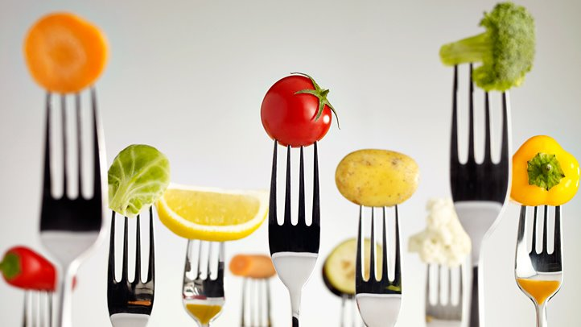

Coronary heart disease is a narrowing of the blood vessels that carry oxygen and blood to the heart. People who eat too much animal fat,
especially saturated fat, are at risk of coronary heart disease, as consuming too much fat causes the excess to block the passageways
of blood and oxygen to the heart.
Type 2 diabetes is a disorder in which the blood has too much glucose in it that the body cannot process. Diabetes is
often caused by diets that are too high in calories and sugar.
Cancer
Because poor nutrition causes the immune system to be weakened, a poor diet can often prohibit the body from fighting off
certain types of cancers. Those individuals who do not get enough vitamins and nutrients in their food are at risk of cancer
caused by immune deficiency.
Obesity
Obesity is a common problem in today's society of inactivity and poor diets. Foods that are high in sugar and saturated
fats lead to obesity, which can open the door to a number of other diseases including heart problems and diabetes.
link

Eating Nutritiously A Struggle When Money Is Scarce
Hunger in America is complicated. It's not just getting enough food, but getting the right food — and making the right choices. link
To help kids who need the nutriton that they need through Veggies For Kids, You can donate the money or fresh vegetable or fruit to our ceneter, every kid has a right to grow up healthy !